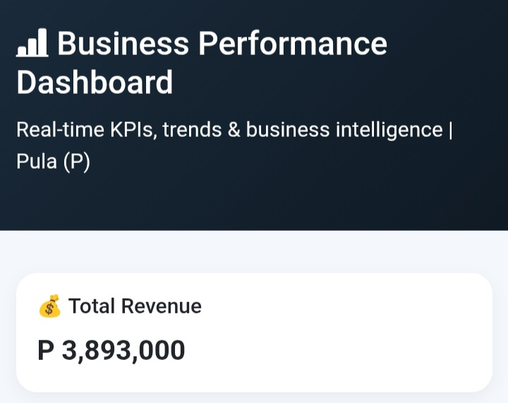
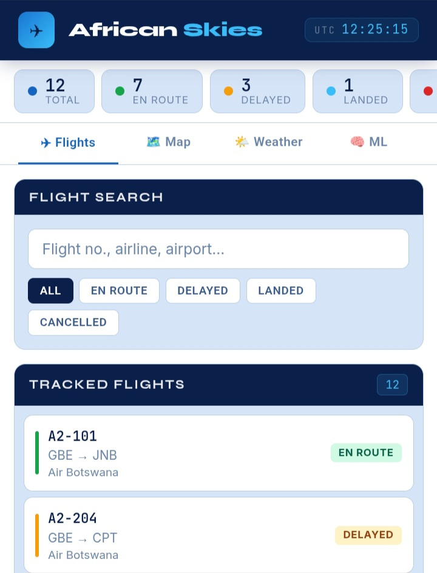
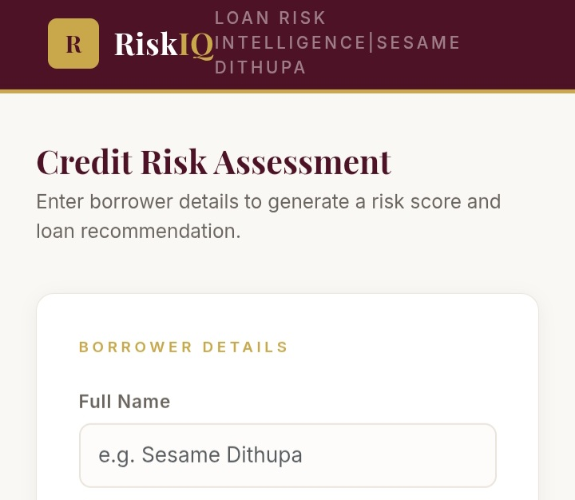
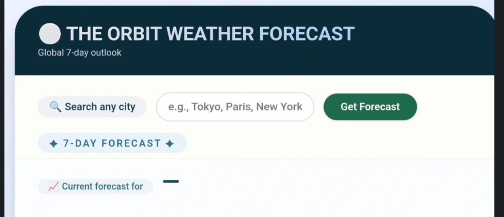
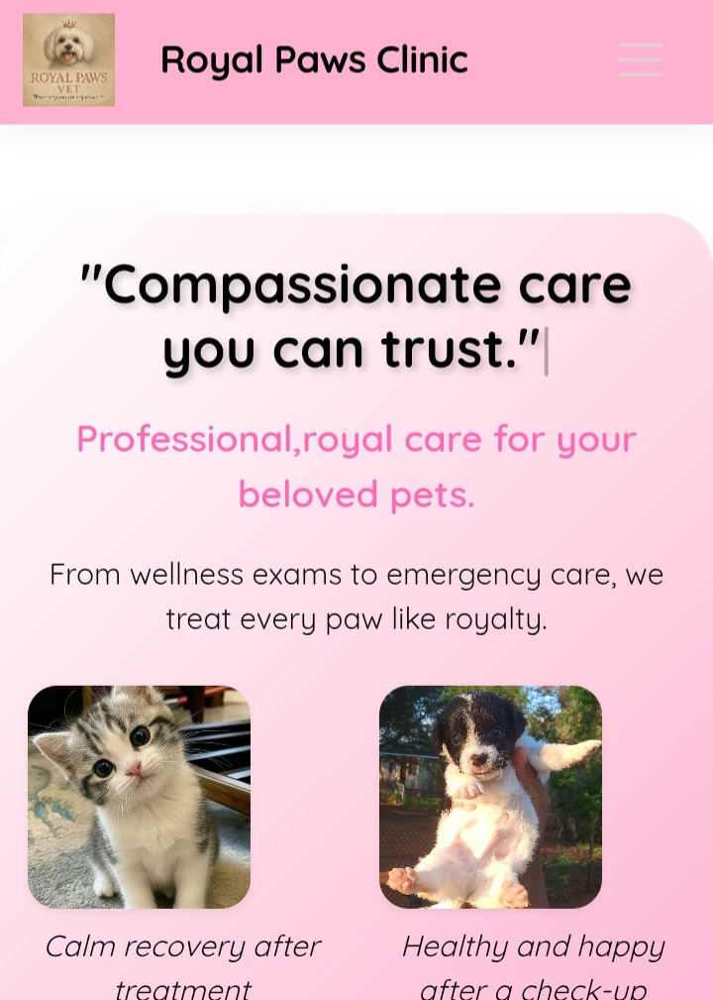

A data visualization dashboard designed to monitor and analyze key business performance indicators such as revenue, expenses, and overall operational efficiency.
Open Project
Developed to modernise aviation operations monitoring across Africa, providing airport teams and regulators with real-time flight visibility, weather risk awareness, and AI-powered delay prediction to support faster, data-driven operational decisions.
Open Project
Loan Risk Intelligence credit assesser developed for the Finance Industry to assess credit risks of loan borrowers to determine the viability of the decision.
Open Project
A web-based application that integrates with a weather API to fetch and display real-time weather data for different locations.
Open Project
A responsive website developed for a veterinary clinic to present services, information, and contact details in a clear and user-friendly format.
Open Project